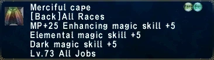
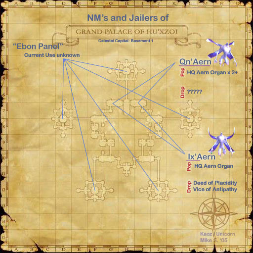

Level 75 reference · Zenith rules


Image source
|
Zone |
Level |
Drops |
Steal |
Spawns |
Notes |
|
2 |
L | ||||
|
HP = Detects Low HP; M = Detects Magic; Sc = Follows by Scent; T(S) = True-sight; T(H) = True-hearing JA = Detects job abilities; WS = Detects weaponskills; Z(D) = Asleep in Daytime; Z(N) = Asleep at Nighttime | |||||


Image source
Notes:
- Around 9000HP
- Popped by trading 1-3 High-Quality Aern Organs to a ??? at G-7 or (I-7) in the basement of Grand Palace of Hu'Xzoi. The ??? does not move, and repops (with equal probability on each side) 15 minutes after the Ix'aern is defeated.
- Using more organs pops more NM's and increases its drop rate:
- If you trade 1 organ, only the Ix'Aern will pop. (33% drop rate on either item)
- If you trade 2 organs, a Qn'aern will also pop (either RDM or WHM). (66% drop rate on either item)
- If you trade 3 organs, 2 Qn'aerns (one RDM, one WHM) will pop. The Ix'aern will drop a vice or deed 100% of the time.
- The Qn'aerns use their respective 2-hours multiple times.
- The Qn'aerns do not need to be killed. Someone outside of the party fighting the Ix'aern can kite them.
- Ix'Aern cannot be sac pulled by having someone disband from the alliance before trading the organs. The NM pops claimed and cannot be pulled by anyone outside of alliance.
- The Ix'aern is immune to Gravity, Sleep, Stun, and Bind but is susceptible to Shadowbind.
- The Ix'aern uses Hundred Fists once.
- The Ix'aern/Qu'aern do not reraise when killed.
- It can be pulled to the nearby Ebon Panels and be kited there with some skill while being manaburned.
- The Deed of Placidity and Vice of Antipathy cannot both drop from the Ix'aern.
- It is most efficient to check the west (G-7) side first, and then move to the east (I-7) side if desired. To get from west to east, head south to the ??? in (G-9/10), use it to pass through the one-way wall, then continue around to the east and north.
Adapted from Eden Wiki: Ix'aern (Monk) · Contributors and history · CC BY-SA 4.0. Revision 20593. Layout, links and optional background text adapted for Zenith.